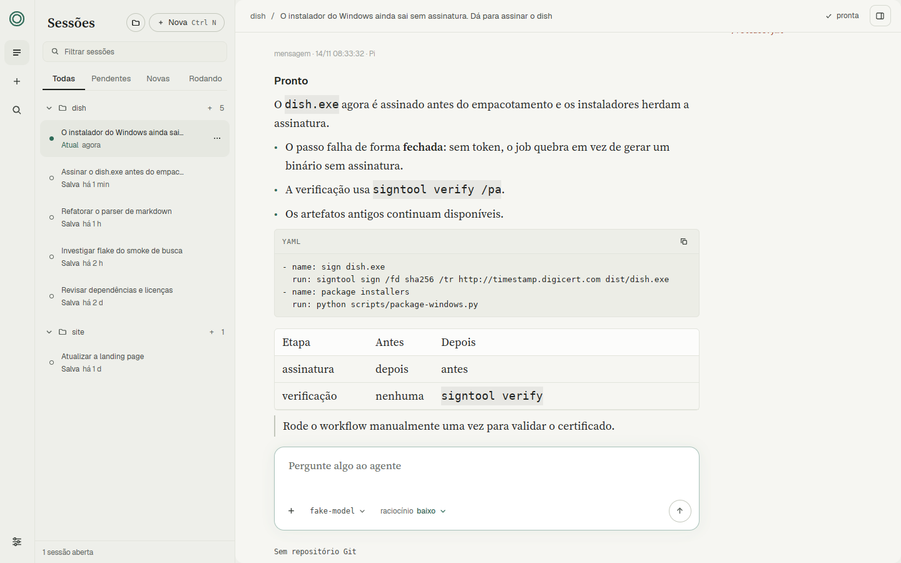

A window for the agent you already run.
Dish speaks the Pi CLI's JSON-RPC protocol over stdio and renders the session in a GPU-accelerated window: transcript, tool-call inspector, session history and workspace navigation. No browser, no webview, no embedded Node runtime.
Linux and Windows · Apache-2.0 · runs entirely on your machine

What it is, and what it isn't
A thin window in front of a program you already trust — not another agent runtime.
- A client, not an agent
- Pi stays installed and stays in charge of models, tools and sessions. Dish reads and writes the same session files the terminal does, so a session started in one opens in the other.
- Nothing leaves the machine
- No backend, no account, no telemetry. The only network calls are the ones Pi makes and the update check, which fetches a signed manifest and nothing else.
- Native, on purpose
- Rust and GPU-rendered text. It starts in a fraction of a second, follows the system theme, and respects reduced motion rather than animating regardless.
Download
Every build comes from a tagged commit through GitHub Actions, and each file publishes a
matching .sha256. Pick the one that fits your system:
Unsigned pre-release. The current Windows build is a pre-release and its binaries are not code-signed yet. SmartScreen will warn when you run the installer. Check the published SHA-256 first; if it matches and you accept the risk, the option to continue is More info → Run anyway. Signing is pending with the SignPath Foundation, and this notice will be updated when it lands.
certutil -hashfile dish-<version>-windows-x86_64-setup.exe SHA256Linux
Windows
The .deb and .rpm packages install the binary as
dish-pi, because dish is already taken by an unrelated package in
both distributions. The * in a file name stands for the release version, and the
builds are x86_64 for now. All
releases, including older betas, live on
the releases page.
Install
The portable tarball is the shortest path, and it needs neither a package manager nor root.
- Unpack the tarball and run the installer. It puts
dishin~/.local/binand adds a launcher to your application menu. - Install Pi, if you don't have it yet. Dish drives the
pithat is already on yourPATHand nothing else.
tar xzf dish-*-linux-x86_64.tar.gz
cd dish-*-linux-x86_64/
./install.sh
# Pi, if it is not installed yet (needs Node.js)
npm install -g @earendil-works/pi-coding-agentVerify a download
Checksums
Each release publishes a .sha256 next to every asset. Compare before running anything:
sha256sum -c dish-*.tar.gz.sha256The app also verifies a minisign-signed manifest before it offers an update, so an update is never accepted from an unsigned source.
Windows checksums
Windows installers are not Authenticode-signed yet, so the published checksum is the check that applies today:
certutil -hashfile dish-<version>-windows-x86_64-setup.exe SHA256
SmartScreen will warn about the unsigned installer. The option to continue is
More info → Run anyway; use it only after the hash matches and you accept
the risk. Do not disable SmartScreen or Defender. Once SignPath signing is in place, this
section will show signtool verify /pa /v instead. Linux builds are not
Authenticode-signed, because that mechanism does not exist on the platform.
Code signing policy
Windows code signing is pending with the SignPath Foundation; current releases are unsigned.
The application was submitted on 2026-10-28 and had no response at the time of writing. When signing is enabled it will use free code signing provided by SignPath.io, certificate by SignPath Foundation, inside the release workflow on GitHub-hosted runners, with every signing request approved by a maintainer before the certificate is used.
The point of the signature is to answer one question before you run a binary: where did this come from, and did it change after it was built? A valid signature answers both.
The full policy — which files will be signed, who holds the roles, and how the certificate is kept — is in docs/code-signing.md.
Build from source
Rust stable, and a working Vulkan driver. That's the whole list.
git clone https://github.com/cleisonsantos/dish
cd dish
cargo build --release --lockedReady when you are.
One download, no account, no installer phoning home. Pi keeps doing the work; Dish just gives it a window.